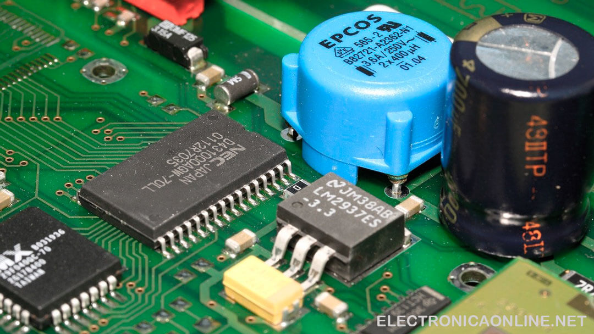
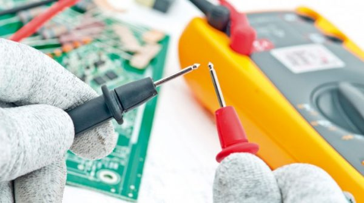

¿Qué es la Electrónica?
Electrónica es la rama de la ciencia que se ocupa del estudio del flujo y control de
electrones (electricidad) y del estudio de su comportamiento y efectos en vacíos, gases y semiconductores,
así como de los dispositivos que utilizan dichos electrones.
Este control de los electrones se realiza mediante dispositivos (componentes electrónicos) que resisten,
transportan, seleccionan, dirigen, conmutan, almacenan, manipulan y aprovechan el electrón.
¿Para que sirve la Electrónica? La electrónica ahora está tan extendida que es más fácil pensar en
cosas que no la usan que en cosas que sí.
El entretenimiento fue uno de los primeros sectores en beneficiarse, ya que la radio (y más tarde la
televisión) dependieron en gran medida de la llegada de los componentes electrónicos. Aunque el teléfono se
inventó antes de que se desarrollara la electrónica, los sistemas telefónicos modernos, las redes de
telefonía móvil y las redes informáticas que constituyen
el núcleo de Internet se benefician de una electrónica digital sofisticada.
Importancia de la Electrónica:

En la actualidad la electrónica está en un estándar de modernidad que se dirige al diseño y aplicación de dispositivos o circuitos que permiten la transmisión, recepción y almacenamiento de información a través de canales como las computadoras, celulares, etc. Permitiendo interacción entre personas desde cualquier lugar. Estos avances electrónicos se centran en mejorar la tecnología volviéndolos aún más rápidos para vendernos así productos asombrosos, convirtiéndolos en una necesidad absoluta y generar así una gran demanda en estos. La electrónica ha originado una nueva era, y esta nueva era es la digital, y cuando decimos que existe una nueva era, es cuando se empieza a cambiar las formas de pensar, de interactuar, y así cambiando las costumbres.
¿Cual es la diferencia entre la electricidad y la Electrónica?
La electricidad: sabrá que es un tipo de energía, un tipo de energía muy versátil que
podemos producir de muchas maneras y usar en muchas más. La electricidad se ocupa del flujo de carga a
través de conductores metálicos.
La electrónica: se ocupa del flujo de carga (electrones) a través de conductores no
metálicos(semiconductores).